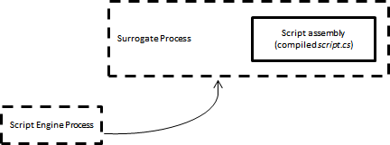

The choice of the CLR (version, CPU architecture), which hosts the the script at runtime is simple: it is the CLR of the script host application. If the script engine is hosted by the custom application the script will be executed by the same CLR, which the host appliocation was built against. The same is applicable for the standalone script execution when the script engine is hosted by the dedicated "engine" aplication (cscs.exe/csws.exe).
Such a nature of CLR sometimes refered as "sticky": once loaded by
the process CLR cannot be unloaded or replaced by another version of
CLR. Another side of the same coin is that only one CLR can be loaded
by process.
All this has certain impact on the CS-Script hosting model for
standalone script execution.
Consider this: the script to be executed on x64 OS needs to interact with the x32 native DLL. To complicate the things the script needs to be executed under CLR v2.0 (while the script engine cscs.exe is compiled for CLR v4.0). The immediate answer to the problem would be to set TargetFramework to "v2.0" and specify C# compiler option /platform:x86 (as a command-line argument or directly from the script). Well this would work only if you are using CS-Script to produce exe or dll from the script. However CLR will not be able to execut such a script. Why? The reason is simple: while the compiled script is indeed built for CLR v2.0 and x86 the host application (cscs.exe) is built for AnyCPU and CLR v4.0 thus the CLR version incompatible with the script assembly will be loaded first.
Note: While possible
in may cases the backwords compatibility (e.g. assembly built for CLR
v2.0 to be executed on CLR v4.0) is not guaranteed.
For example calling the Microsoft.SqlServer.Management.Common.BeginTransaction from
Microsoft.SqlServer.ConnectionInfo.dll (built for CLR v2.0) will throw
the following exception if executed under CLR v4.0:
"Mixed mode assembly is built against version
'v2.0.50727' of the runtime and can not be loaded in the 4.0 runtime
without additional configuration information."
Therefore setting TargetFramework in the configuratipn console has very limited practical application (e.g. building executables from a script file).
The actual solution to the problem is the using the //css_host directive in the script.
CLR_Version - specifies the version of CLR the script should be execute on (e.g. 2.0).
CPU - indicates which platforms the script should be run on: x86, Itanium, x64, or anycpu.
These directive is used to execute script from a surrogate host process. The script engine application (cscs.exe or csws.exe) launches the script execution as a separate process, which is specifically built for the required version of CLR and OS CPU architecture.
The surrogate process is a "mini" version of CS-Script engine itself
stripped off all scripting functionality an capable of only hosting the
compiled script assembly.

Default Execution Model

"Surrogate" Execution Model
Because of the very light nature the surrogate process many CS-Script runtime features cannot be accessed from the script being executed (e.g. CSSEnvironment). Also the entry assembly of the script process is no longer the cscs.exe/csws.exe thus it cannot be used to obtain the information about the application/current directory. Also the all DefaultRefAssemblies are ignored. The reason for this limitation is very practical. The default assemblies are not warranteed may be valid in the surrogate host environment (e.g. System.Linq.dll fo the host prosess of v2.0 .NET).
Note: Even if you can supply the version of the CLR to be used for surrogate process it may not be the best choice for hosting. //css_host directive is primarily designed to handle x86 vs x64 cases it will not prevent your assembly references identified by the script engine (of the latest CLR) being supplied to the older CLR surrogate host process. It may just work as some assemblies are not changed between the CLR versions. However if you are changing the version (not only the CPU architecture) the best practice is to use the corresponding build of the script engine. The builds for the older versions of CLR are in the <cs-script>\Lib\Bin folder.
This feature was not in the original design of CS-Script but was added due to users demand.
Example
The following are example (<cs-script>\Samples\SurrogateHostScript.cs) demonstrates how to force the script to be compiled and executed against legacy CLR and alternative CPU architecture on Windows x64:
//css_host /version:v2.0 /platform:x86; |